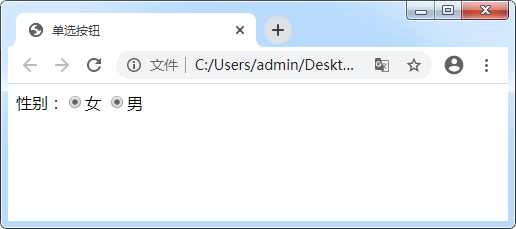
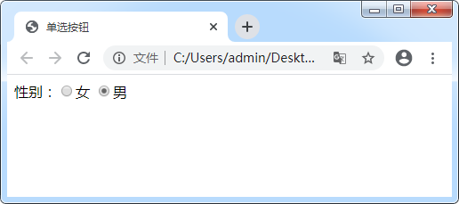

首页 > 编程笔记
HTML单选按钮
单选按钮在网页中很常见。例如《HTML <input>标签》中的性别字段，用户只能选择男或女中的一种，此时选用单选按钮再合适不过了。
在 HTML 中，把 <input> 标签的 type 属性设置为 radio 可以表示单选按钮。具体语法格式如下：
从运行结果可以看出，两个单选按钮都被选中。读者可能会考虑是因为我们同时给两个单选按钮设置了
通过运行结果可以发现，后面的按钮被选中，而前面的按钮没有。这是因为当 name 属性值相同而且 type 属性为 radio 时，浏览器会认为是相同字段，默认只能选择一个。然而又因为我们为两个按钮同时设置了选中效果，根据代码的执行顺序后者会覆盖前者。
运行效果如图所示：

图3：带属性值的单选按钮
通过运行结果发现，value 值并不会显示在页面中。之所以建议为每个按钮添加 value 值，是因为最终提交表单时，服务器可以根据 value 属性值辨别提交的是哪一项。
本节中，我们将讲述第一种。那么我们就来看一下 id 属性是如何与 <label> 标签配合使用的：
<label> 标签主要用来为 <input> 元素定义标记，又因为 <label> 标签中的 for 属性可以与 <input> 元素的 id 属性进行绑定，所以当点击 <label> 标签中的内容（<label for="girl">女</label>）时，也相当于对 <input> 中的元素（<input type="radio" name="girl" value="girl" id="girl">）进行了点击。
运行结果如下图所示：

图4：单选按钮
从运行结果来看没有任何变化，但是当读者点击 <label> 标签中的“男”或“女”时，会发现对应的按钮也会有相应变化。这是在开始时没有加 <label> 标签时所做不到的。
在 HTML 中，把 <input> 标签的 type 属性设置为 radio 可以表示单选按钮。具体语法格式如下：
<input type="radio" />
同单行文本框和密码框一样，单选按钮要想被正确提交，也必须设置 name 属性。除了 name 属性之外，单选按钮还有几个其它属性，我们来看一下。1. 单选按钮其它属性
| 其它属性 | 说明 |
|---|---|
| checked | 用来规定在页面加载时应该被预先选定的 input 元素。 |
| value | 用来定义被选中时发送到服务器的值。同一组中每个按钮的值应该不同，这样服务器才能辨别提交的是哪一项。 |
| id | 规定 HTML 元素的唯一 id。id 值在整个页面是唯一的，不会重复。 |
1) checked属性
checked 属性用来设置页面加载时单选按钮的选中状态。当属性值为“checked”时，单选按钮会被选中。下面我们通过一个简单的示例来进行演示：
<form action="http://vip.biancheng.net/login.php" method="post" name="formName">
性别：<input type="radio" name="girl" checked="checked">女
<input type="radio" name="boy" checked="checked">男
</form>
运行结果如图所示：

图1：同时被选中的单选按钮
图1：同时被选中的单选按钮
从运行结果可以看出，两个单选按钮都被选中。读者可能会考虑是因为我们同时给两个单选按钮设置了
checked="checked"属性，其实还有一个原因，两个单选按钮的 name 属性值不同也会产生这样的结果。
注意：当 type 属性值为 radio 时，name 属性值必须保持一致。本例只是为了演示问题才会为所有按钮加checked="checked"属性，在实际开发中不会这样写。checked="checked"可以简写为 checked。
2) name属性
上述代码因为 name 属性值不同，两个单选按钮被同时选中。接下来我们就来看一下当 name 属性值相同时，给两个按钮都设置选中，会产生什么效果：
<form action="http://vip.biancheng.net/login.php" method="post" name="formName">
性别：<input type="radio" name="sex" checked>女
<input type="radio" name="sex" checked>男
</form>
运行结果如图所示：

图2：单选按钮
图2：单选按钮
通过运行结果可以发现，后面的按钮被选中，而前面的按钮没有。这是因为当 name 属性值相同而且 type 属性为 radio 时，浏览器会认为是相同字段，默认只能选择一个。然而又因为我们为两个按钮同时设置了选中效果，根据代码的执行顺序后者会覆盖前者。
3) value属性
上面我们提到了单选按钮也有 value 属性，接下来就来看一下该如何使用它呢？我们来看一段代码:
<form action="http://vip.biancheng.net/login.php" method="post" name="formName">
性别：<input type="radio" name="sex" value="girl">女
<input type="radio" name="sex" value="boy" checked="checked">男
</form>
图3：带属性值的单选按钮
通过运行结果发现，value 值并不会显示在页面中。之所以建议为每个按钮添加 value 值，是因为最终提交表单时，服务器可以根据 value 属性值辨别提交的是哪一项。
4) id属性
在为单选按钮设置 id 属性时，一般有 3 种用途：- 配合 <label> 标签使用；
- 通过 JavaScript 获取元素，对元素进行一系列操作；
- 通过 CSS 选择元素，为其添加样式。
本节中，我们将讲述第一种。那么我们就来看一下 id 属性是如何与 <label> 标签配合使用的：
<form action="http://vip.biancheng.net/login.php" method="post" name="formName">
性别：<input type="radio" name="girl" value="girl" id="girl"><label for="girl">女</label>
<input type="radio" name="girl" value="boy" id="boy" checked="checked"><label for="boy">男</label>
</form>
通过以上代码可以发现，<label> 标签中的 for 属性与 <input> 元素的 id 属性值相同，我们可以说它们之间进行了一个绑定。那么 <label> 标签到底是用来做什么的呢？<label> 标签主要用来为 <input> 元素定义标记，又因为 <label> 标签中的 for 属性可以与 <input> 元素的 id 属性进行绑定，所以当点击 <label> 标签中的内容（<label for="girl">女</label>）时，也相当于对 <input> 中的元素（<input type="radio" name="girl" value="girl" id="girl">）进行了点击。
运行结果如下图所示：
图4：单选按钮
从运行结果来看没有任何变化，但是当读者点击 <label> 标签中的“男”或“女”时，会发现对应的按钮也会有相应变化。这是在开始时没有加 <label> 标签时所做不到的。
我们建议每个单选按钮都和 <label> 标签配合使用，一是为了用户体验，二是为了在后期使用 JavaScript 语言操作数据时更方便。
2. 总结
在文章的末尾我们对这篇文章的重要知识点进行一个总结：
- 要想单选按钮被正确提交到后台，必须为每个字段设置 name 属性；
- 当 <input> 标签用作单选按钮时，其 name 属性值必须相同，这样浏览器才会认为是同一个字段，从而实现单选效果；
- value 属性值不会显示在页面上，但是在提交数据时，后台接收的是我们设置的 value 属性值；
- <label> 标签用来为 <input> 元素定义标记，当 <label> 标签中的 for 属性与 <input> 元素的 id 属性绑定时，点击 <label> 标签中的内容，也相当于点击了 <input> 中的元素。
关注公众号「站长严长生」，在手机上阅读所有教程，随时随地都能学习。内含一款搜索神器，免费下载全网书籍和视频。

微信扫码关注公众号